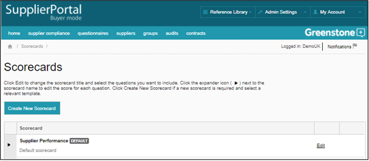
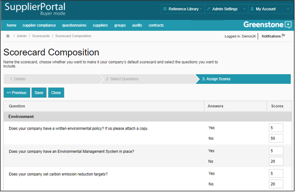

Using scorecards allows Buyers to automatically score supplier questionnaire responses. In the Scorecards page, you are provided with a Default scorecard that can be used as a template. Click ‘Edit’ to edit scorecard details and select the questions you want to include. Click the expander icon (>) next to the Scorecard name to show the questions included and their associated scores. Click ‘Create New Scorecard’ to create a new scorecard.

When creating a scorecard you select the questions that you would like it to include, and then assign a weighting to the each response option.

Scorecards can be applied in the Questionnaire Responses and Scorecard Analysis sections of a Supplier’s profile, and in Groups > Scorecard Analysis.